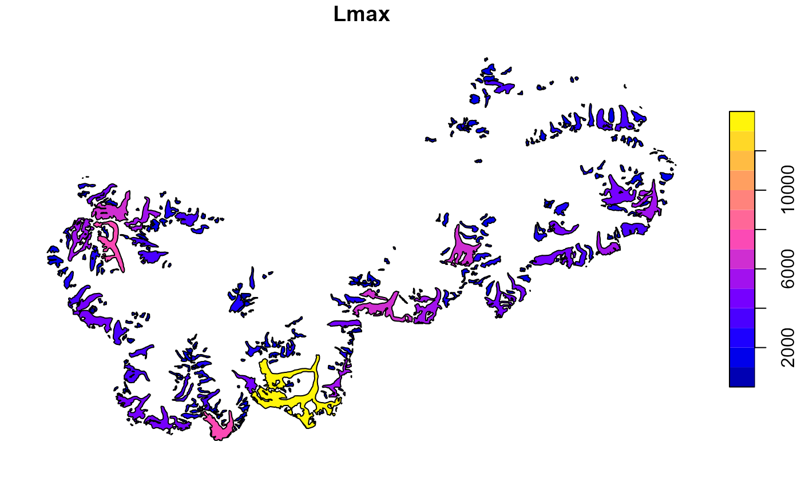
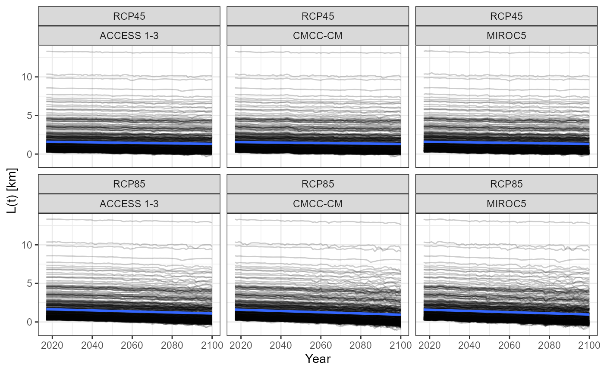
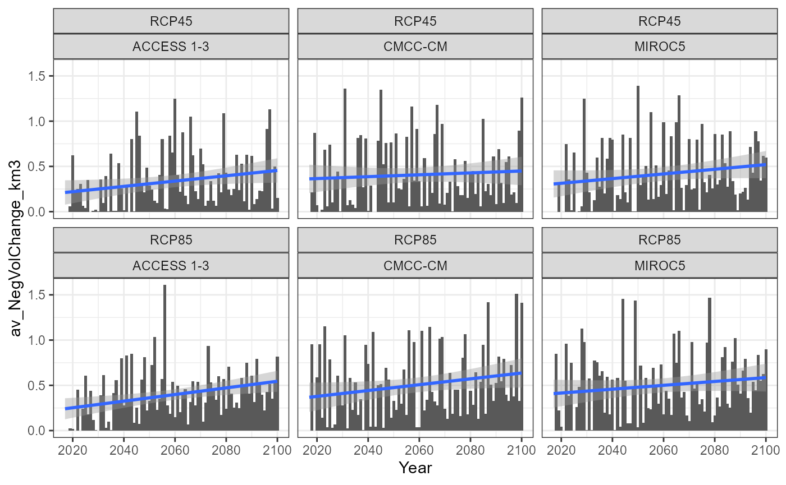

Estimating glacier lengths in Central Asia
estimate-glacier-lengths.Rmd
library(riversCentralAsia)
library(ggplot2)
library(sf)
#> Linking to GEOS 3.9.0, GDAL 3.2.1, PROJ 7.2.1Background & Motivation
Melt from glaciers ist the most important contributor of discharge in most of the larger rivers in Central Asia. However, measurements of discharge from glaciers are generally not available. To estimate the contribution from glacier melt to discharge under different climate scenarios, we use empirial relationships published by Oerlemans (2005) and Aizen, Aizen, and Kuzmichonok (2007) which are described below.
Glacier length model by Oerlemans
Oerlemans (2005) analysed a global glacier length time series and relate glacier length to temperature as follows:
\[\frac{dL'(t)}{dt}=-\frac{1}{\tau} \cdot \left( c \cdot T'(t) + L'(t) \right)\] where the glacier length of year \(t\), \(L(t)\) is defined as the glacier length in the reference year \(L_0\) plus the change of the glacier length with respect to the reference year \(L'(t)\) (see below). \(T'(t)\) is the mean annual temperature perturbance with respect to a baseline mean temperature.
\[L(t) = L_0 + L'(t)\] The response time \(\tau\) [a] is parameterised as proposed by Oerlemans (2005) as
\[\tau = \frac{2266.67}{s \cdot \sqrt{L_0 \cdot (1+20 \cdot s) \cdot P(t)}}\] \(s\) is the average glacier slope [-] that is available from Consortium (2017)1. \(P(t)\) is the annual precipitation [m].
The climate sensitivity \(c\) [m/\(^{\circ}\)C] is given by
\[c=2.3 \cdot \frac{P(t)^{0.6}}{s}\]
Glaciers volume - length relationships by Aizen et al.
Aizen, Aizen, and Kuzmichonok (2007) reports scaling relationships between glacier length and surface area and between glacier surface area and volume in the Tien Shan mountains. They are:
\[S=\left(\frac{L}{1.6724}\right)^{\frac{1}{0.561}}\]
\[V=0.03782 \cdot S^{1.23}\text{ }\text{ }\text{ for }\text{ }\text{ } S<0.1\text{ km}^2\]
\[V=\frac{\left(0.03332 \cdot S^{1.08} \cdot e^{0.1219 \cdot L}\right)}{L^{0.08846}}\text{ }\text{ }\text{ for }\text{ }\text{ } 0.1 < S < 25\text{ km}^2\]
\[V=0.018484 \cdot S + 0.021875 \cdot S^{1.3521}\text{ }\text{ }\text{ for }\text{ }\text{ } S > 25\text{ km}^2\]
with the glacier surface area \(S\) in [km\(^2\)] and the glacier volume \(V\) [km\(^3\)].
The method was applied in Siegfried et al. (2012) with the following extensions. They found that the glacier area reported in the GLIMS data set corresponds well to the data reported in Aizen (2007).
Note that the relationships above have been derived from annual glacier length data.
How to estimate glacier lengths for climate scenarios
Load example data
The example data set for this vignette contains an subset of the Randolph Glacier Inventory 6.0 (Consortium 2017) and average temperatures and precipitation for each glacier between 2006 and 2100. The climate prediction data has been downloaded from Karger et al. (2020) and bias correction following Beck et al. (2020) is applied. A more detailed description of how this was done is given in the course book Applied Modeling of Hydrological Systems in Central Asia
data("vignette_estimate_glacier_lengths")
# Subset of the Randolph Glacier Inventory 6.0
rgi6 <- vignette_estimate_glacier_lengths[[1]]
# Precipitation data per glacier, over time for 3 climate prediction models and 2 RCP scenarios.
prec <- vignette_estimate_glacier_lengths[[2]]
# Temperature data per glacier, over time for 3 climate prediction models and 2 RCP scenarios.
temp <- vignette_estimate_glacier_lengths[[3]]
rm(vignette_estimate_glacier_lengths)
plot(rgi6["Lmax"])
ggplot(prec) +
geom_line(aes(Year, `P [m/a]`, group = Glacier), alpha = 0.02) +
geom_smooth(aes(Year, `P [m/a]`), alpha = 0.4, method = "lm", se = TRUE,
weight = 0.6) +
facet_wrap(c("RCP", "Model")) +
theme_bw()
ggplot(temp) +
geom_line(aes(Year, `T [deg C]`, group = Glacier), alpha = 0.02) +
geom_smooth(aes(Year, `T [deg C]`), alpha = 0.6, method = "lm", se = FALSE,
weight = 0.6) +
facet_wrap(c("RCP", "Model")) +
theme_bw()
Calculate temperature annomaly
Oerlemans function use temperature deviations from the baseline period as model forcing.
baseline <- 10 # 10 years of baseline, i.e. 2006 - 2016
yearbase <- min(temp$Year) + baseline
tbaseline <- temp %>%
dplyr::filter(Year <= yearbase) %>%
dplyr::group_by(Model, RCP, Glacier) %>%
dplyr::summarise(`T [deg C]` = mean(`T [deg C]`))
tannomaly <- temp %>%
dplyr::left_join(tbaseline, by = c("Model", "RCP", "Glacier")) %>%
dplyr::mutate(`Ta [deg K]` = `T [deg C].x` - `T [deg C].y`) %>%
dplyr::select(-`T [deg C].x`, -`T [deg C].y`)Calculate glacier length
This may take a while.
test <- riversCentralAsia::OerlemansGlacierLengthModel_FormatLong(tannomaly, prec, 10, rgi6)
dL <- test[[1]]
L <- test[[2]]
ggplot(dL) +
geom_line(aes(Year, `dL(t) [km]`, group = Glacier), alpha = 0.2) +
geom_smooth(aes(Year, `dL(t) [km]`), alpha = 0.6, method = "lm", se = FALSE,
weight = 0.6) +
facet_wrap(c("RCP", "Model")) +
theme_bw()
ggplot(L) +
geom_line(aes(Year, `L(t) [km]`, group = Glacier), alpha = 0.2) +
geom_smooth(aes(Year, `L(t) [km]`), alpha = 0.6, method = "lm", se = FALSE,
weight = 0.6) +
facet_wrap(c("RCP", "Model")) +
theme_bw()
Calculate glacier volume
glacier_volumes <- riversCentralAsia::AizensGlacierFunctions((L %>% dplyr::filter(L$`L(t) [km]`>0)))Volume change
glacier_volumes <- glacier_volumes %>%
dplyr::group_by(Glacier, RCP, Model)%>%
dplyr::mutate(VolumeChange_km3 = c(0,diff(Volume_Aizen_km3)))Filter out the largest glacier and sum up the negative volume change.
glacier_volumes_min <- glacier_volumes %>%
dplyr::filter(Glacier != "V314")
total_glacier_melt <- glacier_volumes %>%
dplyr::group_by(Year, RCP, Model) %>%
dplyr::mutate(NegChange_km2 = base::ifelse(VolumeChange_km3 <= 0, VolumeChange_km3, 0),
PosChange_km2 = base::ifelse(VolumeChange_km3 >= 0, VolumeChange_km3, 0)) %>%
dplyr::summarise(av_Length_km = base::mean(`L(t) [km]`, na.rm = TRUE),
av_Area_km2 = base::mean(Area_Aizen_km2, na.rm = TRUE),
av_NegVolChange_km3 = base::abs(base::sum(NegChange_km2, na.rm = TRUE)),
av_PosVolChange_km3 = base::sum(PosChange_km2, na.rm = TRUE))
ggplot(total_glacier_melt) +
geom_col(aes(Year, av_NegVolChange_km3)) +
geom_smooth(aes(Year, av_NegVolChange_km3), method = "lm") +
facet_wrap(c("RCP", "Model")) +
theme_bw()
Note that these empirical relationships are not suitable for applications on individual glaciers.
References
The RGI6 dataset is roughly compatible with the GLIMS data set in the Sokh river catchment but much easier to handle.↩︎